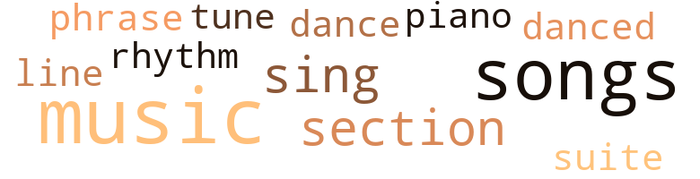
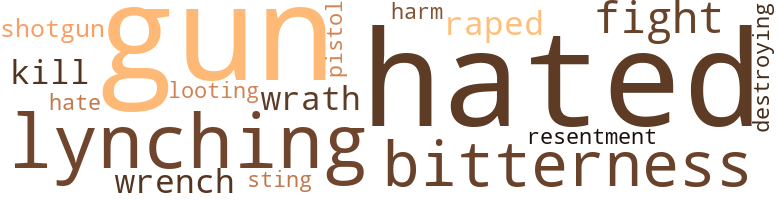
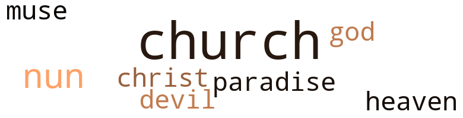

No Way Back: A Novella, by Ellis, Teresa (1973)
23 music-related terms matched in this text.
Most frequent terms in this topic: music (6); songs (5); section (2); tune (1); danced (1)
dance.v.03
Definition: skip, leap, or move up and down or sideways
| word | sentence |
|---|---|
| dance | I was thinking that he was indeed the most unusual man I had ever encountered , when he suddenly asked me to dance . |
| danced | We danced for a while and I felt myself relaxing as I had not relaxed in years . |
music.n.01
Definition: an artistic form of auditory communication incorporating instrumental or vocal tones in a structured and continuous manner
| word | sentence |
|---|---|
| music | In the third-floor music room , one could sit in the window seat while awaiting a lesson and look out at the majestic old magnolias which stood as sentinels at the window , their thick leathery leaves shining perfection , their fragrant , gigantic blossoms so sweet as to give the effect one gets upon exposure to the overuse of perfume . |
| music | In addition to the usual academic curriculum , there were included courses in the social graces , in cooking , sewing and music , and music became an important part of my life . |
| music | In addition to the usual academic curriculum , there were included courses in the social graces , in cooking , sewing and music , and music became an important part of my life . |
| music | I would excel in scholarship and music and his pride would know no bounds . |
| music | So , gone were my girlhood dreams of beautiful white satin or lace , a church filled with gardenias and other flowers , an organ playing heavenly music , an aisle strewn with rose petals , over which I would walk lightly on my father 's arm to meet my mate . |
| music | After having dinner , I decided to go into the lounge to listen to the music and watch the dancing . |
phrase.n.02
Definition: a short musical passage
| word | sentence |
|---|---|
| phrase | Coming back to me now is the feeling of the full impact this simple phrase was to exert on my whole life . |
piano.n.01
Definition: a keyboard instrument that is played by depressing keys that cause hammers to strike tuned strings and produce sounds
| word | sentence |
|---|---|
| piano | There was a swimming pool , craft and hobby rooms , TV and radio , and a grand piano , the prize which afforded me much pleasure through my gloom . |
rhythm.n.04
Definition: the arrangement of spoken words alternating stressed and unstressed elements
| word | sentence |
|---|---|
| rhythm | He was a very skillful lover , acutely aware of timing , and finally , in a soothing rhythm , he took me , and my body answered immediately in wild gyrations beneath him , writhing in a pleasure unsurpassed . |
section.n.01
Definition: a self-contained part of a larger composition (written or musical)
| word | sentence |
|---|---|
| section | Our local church of course was sectioned off for whites and coloreds , and since we were known in our home area , to avoid trouble we sat in the colored section . |
| section | I also noticed there was a section to be filled in as to why I wished to enter the hospital . |
sing.v.02
Definition: produce tones with the voice
| word | sentence |
|---|---|
| sings | The true nightingale is a European bird of somewhat dull plumage , and only the male sings . |
| sing | In the case of the spectacularly colored crested cardinal , both sexes sing . |
song.n.01
Definition: a short musical composition with words
| word | sentence |
|---|---|
| songs | Nights punctuated with the melancholy songs of the cardinal and the mockingbird . |
| songs | It might be a point of interest to you to know that the night - ingale so often referred to in stories and songs of the South is not a true nightingale at all , but is in fact the cardinal . |
| songs | I listened for the songs of birds and heard none . |
| songs | Walking through the woods , we were always accompanied by the riotous songs of the many birds , whose throats seemed to strain and swell from the sheer joy inside . |
| songs | From there my thoughts wander even farther , to the glorious flowering fields of home , to the woods and bayous , quiet , yet alive with the chit-chat of the birds and the night songs of the crickets . |
suite.n.01
Definition: a musical composition of several movements only loosely connected
| word | sentence |
|---|---|
| suite | It was a suite of rooms , more grand than anything I 'd ever seen . |
tune.n.01
Definition: a succession of notes forming a distinctive sequence
| word | sentence |
|---|---|
| line | Robert , next in line , had long ago left the city , crossed the line , married , and was making a successful career as an officer in the Air Force . |
| tune | In our frantic dash in completely opposite directions , we had been so in tune as to appear as one being . |
27 violence-related terms matched in this text.
Most frequent terms in this topic: gun (4); hated (4); lynching (2); bitterness (2); fight (2)
destroy.v.04
Definition: put (an animal) to death
| word | sentence |
|---|---|
| destroying | It was September , and a few days after his death , a hurricane of unusual force wrought havoc on our homeland in Louisiana , completely destroying it . |
fight.n.05
Definition: a boxing or wrestling match
| word | sentence |
|---|---|
| fight | In addition to the everyday stress of married life with children involved , and finally a court fight over the custody of one of the children , we found the dams beginning to give way and to crumble finally under the load . |
fight.v.02
Definition: fight against or resist strongly
| word | sentence |
|---|---|
| fight | I can fight no longer . |
gun.n.01
Definition: a weapon that discharges a missile at high velocity (especially from a metal tube or barrel)
| word | sentence |
|---|---|
| gun | Arriving there , he displayed the gun to the doctor in a threatening manner , demanding that he get some relief for his headaches . |
| gun | The doctor tried to reason with him , not realizing that the gun was not loaded . |
| gun | The police forced open the door and Robert appeared , still handling the gun . |
| gun | Of course , they had no way of knowing then that the gun was not loaded and now Robert lay with his body torn by the force of the close-range shots . |
harm.v.01
Definition: cause or do harm to
| word | sentence |
|---|---|
| harm | We were in our separate world now and no one could harm us there . |
hate.v.01
Definition: dislike intensely; feel antipathy or aversion towards
| word | sentence |
|---|---|
| hate | I had come to hate Negroes now and therefore hated a part of myself , no matter how minuscule that part might be . |
| hated | I had come to hate Negroes now and therefore hated a part of myself , no matter how minuscule that part might be . |
| hated | My father was inconsolable , and I hated myself because I was causing his grief . |
| hated | In general , Negroes hated my kind , yet by many I would be considered a Negro . |
| hated | Most whites hated my kind , yet I was white except for some very distant minuscule source of nonwhite blood . |
kill.v.10
Definition: cause the death of, without intention
| word | sentence |
|---|---|
| kill | When he arrived at the jail , he went to the cell where the Negro was incarcerated , and thinking my sister had been raped , tried to shake the bars and threatened the " nigger " that if he could get at him he would kill him . |
looting.n.01
Definition: plundering during riots or in wartime
| word | sentence |
|---|---|
| looting | The guardsmen confirmed that looting was expected in such isolated areas . |
lynch.v.01
Definition: kill without legal sanction
| word | sentence |
|---|---|
| lynching | Perhaps the same men who had formed the lynching party at the jail had felt outdone because they had been wrong about my sister , thinking her to be fully white . |
lynching.n.01
Definition: putting a person to death by mob action without due process of law
| word | sentence |
|---|---|
| lynching | In the meantime , a crowd , thinking my sister white , had gathered outside the jail calling for a lynching . |
| lynchings | You see , lynchings were not unknown in that time . |
pistol.n.01
Definition: a firearm that is held and fired with one hand
| word | sentence |
|---|---|
| pistol | My sister had explained that he became quite listless and belligerent , and one day he left the house , borrowed an unloaded target pistol from a neighbor and headed for his doctor 's office . |
rape.v.01
Definition: force (someone) to have sex against their will
| word | sentence |
|---|---|
| raped | When he arrived at the jail , he went to the cell where the Negro was incarcerated , and thinking my sister had been raped , tried to shake the bars and threatened the " nigger " that if he could get at him he would kill him . |
resentment.n.01
Definition: a feeling of deep and bitter anger and ill-will
| word | sentence |
|---|---|
| resentment | The college was a parochial college and my resentment of the church had begun . |
| bitterness | I was bitter , and the bitterness grew each day . |
| bitterness | The realization of the cruel reality that this could never be added to my bitterness . |
shotgun.n.01
Definition: firearm that is a double-barreled smoothbore shoulder weapon for firing shot at short ranges
| word | sentence |
|---|---|
| shotgun | He donned his hip boots and sought his shotgun , as he anticipated the arrival of looters . |
sting.n.03
Definition: a painful wound caused by the thrust of an insect's stinger into skin
| word | sentence |
|---|---|
| sting | Outwardly I was completely composed , but the sting of the horrible degradation bit deep into the sinews within my flesh . |
wrath.n.01
Definition: intense anger (usually on an epic scale)
| word | sentence |
|---|---|
| wrath | Fearing my father 's wrath , my grandmother hesitated to explain to me that my sister 's husband had left her and that she was living with a Negro family and the children spent part of the time with my grandparents . |
wrench.n.01
Definition: a sharp strain on muscles or ligaments
| word | sentence |
|---|---|
| wrench | At other times , it has caused me to wish I could reach inside myself somehow and wrench its implication from my body , so much the grief it has caused . |
14 religion-related terms matched in this text.
Most frequent terms in this topic: church (6); God (1); paradise (1); heaven (1); devil (1)
church.n.02
Definition: a place for public (especially Christian) worship
| word | sentence |
|---|---|
| church | " I 've seen you in church . " |
| church | Betrayed because of the church , whose teachings I always accepted without question . |
| church | On that day I resolved never to enter the church again . |
| church | So , gone were my girlhood dreams of beautiful white satin or lace , a church filled with gardenias and other flowers , an organ playing heavenly music , an aisle strewn with rose petals , over which I would walk lightly on my father 's arm to meet my mate . |
church.n.04
Definition: the body of people who attend or belong to a particular local church
| word | sentence |
|---|---|
| church | Our local church of course was sectioned off for whites and coloreds , and since we were known in our home area , to avoid trouble we sat in the colored section . |
| church | The college was a parochial college and my resentment of the church had begun . |
eden.n.01
Definition: any place of complete bliss and delight and peace
| word | sentence |
|---|---|
| heaven | The thought now dawned - " Would there be separate sections in heaven too ? " |
| paradise | These were my links with some remote paradise which existed in another world far removed from mine . |
god.n.03
Definition: a man of such superior qualities that he seems like a deity to other people
| word | sentence |
|---|---|
| God | She told me it was a sign from God , and that I should not worry about it nor mention it to anyone else . |
messiah.n.01
Definition: any expected deliverer
| word | sentence |
|---|---|
| Christ | I was faithful and pious , and on Good Fridays I always seemed to accompany Christ on his " way of the cross , " seemed to feel the weight of that cross , sorrowed at his suffering , and in spirit died with him when at last he breathed no more . |
muse.n.01
Definition: in ancient Greek mythology any of 9 daughters of Zeus and Mnemosyne; protector of an art or science
| word | sentence |
|---|---|
| muse | I muse over the splintering of my last marriage , which had been an opportunity to begin again , but through the limitation of circumstance and my own failings , failed to come to fruition . |
nun.n.01
Definition: a woman religious
| word | sentence |
|---|---|
| nun | There were gardens devoted entirely to roses of many colors , tenderly cared for by the nun who was overseeing the gardener . |
| nuns | The nuns made us welcome , inquiring anxiously about my father . |
satan.n.01
Definition: (Judeo-Christian and Islamic religions) chief spirit of evil and adversary of God; tempter of mankind; master of Hell
| word | sentence |
|---|---|
| devil | We called them devil 's horses . |